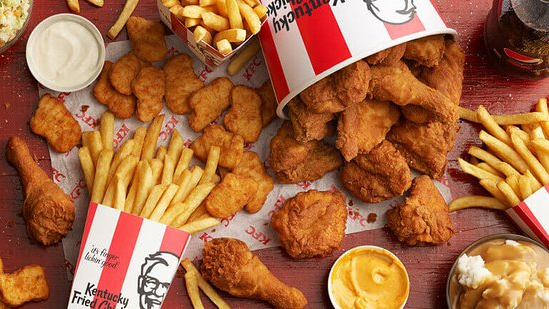
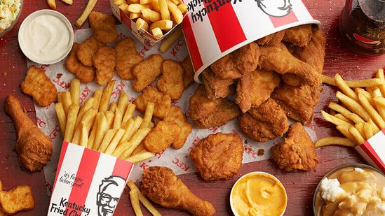
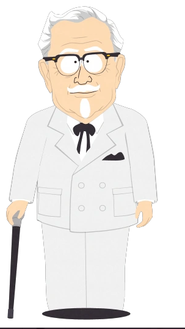

Todo comenzó con un pollo frito preparado por Harland Sanders, quien nació
en Henryville Indiana en 1890. Desde pequeño aprendió a luchar por la
vida, por tener la responsabilidad de cuidar a sus hermanos pequeños.
Cuando su madre falleció y tuvo que trabajar para sostener a su familia.
Sanders logró el dominio del arte culinario, después de haber intentado
varias profesiones descubrió su verdadera vocación. En 1930 con 40 años de
edad, inventa la receta original en una pequeña freidora a presión. Los
clientes comían en el propio comedor de Sanders y en poco tiempo su comida
se tornó en una atracción. Este suceso llevó a ampliar el negocio donde
paso a servir cerca de 100 personas diariamente en el restaurante de
Corbin - Kentucky USA, dedicándose exclusivamente a la preparación del
pollo. Sanders perfeccionó en los años siguientes la receta secreta con la
mezcla de 11 hierbas, las cuales permanecen hasta hoy en las cocinas de
KFC. Con una idea en la cabeza y el talento en sus manos, Sanders recorrió
los restaurantes de los EEUU ofreciendo franquicias para la
comercialización de su pollo frito, su idea era simple y honesta, él hacía
la demostración a los funcionarios y propietarios del restaurante para que
su receta fuese aprobada, 5 centavos de dólar de cada pollo vendido eran
para él. En 1964 ya contaba con más de 600 franquicias en USA y Canadá. En
el año 1980 muere el Coronel Sanders a los 90 años de edad.
